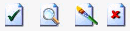

Blacksmith Applications, www.blacksmithapps.com
Home > Billbacks > create new billback
Create Billback - page 1 - Basic Info
Billback Code - This identifier is created and assigned by the system when you save a billback.
Title - Enter a title for this billback.
Billback Number - Enter the billback number that was used by the organization that created the billback.
Billback Date - Select or enter the date that the billback was generated (the date you select must be after the end date of the delivery period).
Received Date - Select or enter the date the billback was received (it must be prior to or equal to the current date).
Postmark Date - Select or enter the postmark date of the billback (as with the Received date, the system checks to ensure the postmark date is prior to or equal to the current date).
Deliver Period Start/End - Select the delivery period dates for the billback (the period that the billback covers).
Amount - Enter the total amount claimed by the billback.
Volume - Enter the volume for which this billback applies, and select case or pounds.
Notes - Enter any helpful notes; use the Comments field below to enter sensitive comments.
Comments - Enter comments that are useful internally: these will not be visible externally to the SHIELDSM application.
If you save the billback information after entering this page, the left pane of the billback will indicate that the Basic Info page is complete (with a green checkmark).
Create Billback - page 2 - Payee
select the payee - Select the radio button of the payee type. The search link below, [click here to search for...] changes depending on your radio button selection.
Click the link to [search for a customer/End User/Territory/Other]. From the search page, select a payee and click the [import selected (payee type)] link. The billback page displays and refreshes with your payee selection.
If you cannot find the payee who issued the billback using the search, select the payee type radio button and select the checkbox labeled "Unknown".
If you select Unknown, a box displays where you must enter the Name and address information for the payee.
Important: If you select either Other or Unknown, the billback will be automatically 100% critically deviated; you will not be able to view deviations on this billback, and expected amounts will be $0. The system can only associate payees with programs if they are selected using the search screen.
Note too that approval permissions may differ for billbacks with known vs unknown payees.
When you click the [save] link, the Add Programs page displays.
Create Billback - page 3 - Add Program
The top of the page displays the Billback, Delivery, and Program information for this billback.
Click the [add program with payee] or [add program] link to display the search/select program page. You can add Pre-Active, Approved, Expiring or Expired programs. Use the [add new entries with powerpunch] to add and enter program information (see the details about powerpunch, below).
Choose the [add program with payee] link to add an internal program that has a relationship with the billback payee.
Choose the [add program] link to add an existing program to the billback.
At any time, you can click the View Summary button to display a real-time summary of the billback information, including:
Pounds - the volume in pounds claimed for the billback
Cases - The volume in cases claimed by for the billback
Itemized Total - The total dollar amount from all Fixed Price, Rebate, Group and Formula price entries.
Billback Total - This is the amount that you entered on the "basic information" page for the billback.
Variance - This amount is the variance between what you entered as the billback total on the basic information page versus the Itemized Total. These amounts must match (i.e., the variance must be zero) in order for you to submit this billback for approval.
Click in the blue Information Summary area and drag it to move the floating summary; click the [minimize this window] link to close the information summary.
Choose the [create unknown program] if you want to create a "pseudo" or unknown product with a limited amount of information (remember that this means the billback will be automatically 100% critically deviated).
Select the program that is included in the billback and click the [import selected program] link. The program information displays on the billback page. Any selected products and lump sums display, and you can click [add] to add lump sums.
The program has its own pop-up menu to the right for billback products:

Checkmark icon - Click the checkmark icon to add products on the program. A pre-filled product search page displays listing all products on the program and telling you to "Check those on the billback". Select the product(s) that are on the billback and click the [import selected products] link. If all products are on the billback, use the [import all returned products] link.
Magnifying Glass/Search icon - Use the magnifying glass to display the full product search page, so that you can search for all products regardless of whether they are already associated with the program.
Create unknown Product icon - If you can't find the product you want to add to the program, use this to enter Unknown Product Information: a window displays in which you can enter the Item Number, Description and Notes.
Delete icon - Click the "X" icon to delete the program from the billback (note that you can also delete individual products using the little "X" icon on each product row). If you delete the program from the billback, any items and rebates associated with the program are also removed.
Products on the Program - For each product selected for the billback program, you can enter amounts for the following discount rate types: Fixed Pricing, Rebate, Growth, Formula Pricing, Claim Adjustment.
If a discount rate type is shown in red, it means either the discount rate type is not on the program, or the product is not part of the discount rate type.
You can enter an amount into the fields directly, or you can click the worksheet icon to display a worksheet window for the item. You can add and delete amount rows, and the worksheet calculates the total. When you click save from the worksheet window, the amount is entered in the field.
Note: You should enter the total dollar amount for the discount type, not the rate per unit of item for the item. For example, if the each pound of product should receive a $2 rebate, and if the billback claims that 10 pounds of product were sold, you should enter 10 pounds for the item volume and $20.00 in the "Rebate" field.
Also note that if you use growth lump sums, you should enter these amounts in lump sum components (do not include these amounts in the total for the growth field). If the lump sum component is not shown, click the [add] link next to lump sum components. If you add lump sum components you must enter a name and amount (you can remove them using the [x] next to each lump sum component).
Add new entries with powerpunch - When you select this link, the Select Programs page displays so you can search on programs and select a program. When you select the program to import, the the program page displays with entry fields for Product, Volume, and Amount. Click the plus sign to add another product, and use the scissors to delete product row. When you have finished entering the product rows, click the [save] link. If the products are not found in the system, a page called "Items not recognized" displays, so that you can enter correct data for the products.
Provided you entered valid product id's for the powerpunch page, when you click [save], the Billback product page displays with the product details and prefilled amounts for the discount rate types: Fixed Pricing, Rebate, Growth, Formula Pricing, Claim Adjustment.
When you have finished entering amounts in all the fields and you click the [save] link, the system compares the amounts you entered to the billback amount claimed (per the basic info page), and displays a message if they differ. If the amounts tie out, a message asks you if you want to submit this billback.
If you submit the billback, the Billback Summary page displays showing this billback as a work in progress, with a Ready for Approval checkbox in the upper right. Select the Ready for Approval checkbox to mark this billback as ready for approval: the summary page re-displays showing this billback as ready for approval, with "Click here to begin the Approval Process" in the upper right.
If you have permission to approve billbacks, you can start the process by either clicking on the Deviations link in the left pane of the billbacks page, or by clicking the yellow "Click here to begin the Approval Process" in the upper right of the billbacks page.